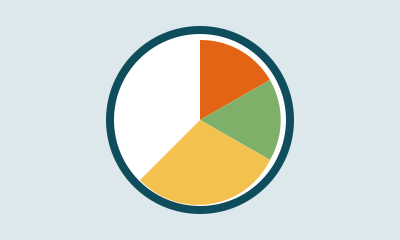

Alimentação
Você não precisa de dieta maluca. Comece trocando pequenas coisas no dia a dia.

Como fazer dietas?
- O corpo funciona como uma balança de energia: o que você come (entra) contra o que você gasta (sai). Se entra menos do que sai, você perde gordura. É o déficit calórico, usado para secar. Se entra mais do que sai, sobra energia para construir músculo. É o superávit calórico, usado para crescer.
- Sempre priorize realizar uma dieta limpa!.
- Evite dietas radicais e, se tiver alguma doença, estiver grávida ou tomar medicamentos, procure um médico antes de mudar a alimentação.
- Sempre beba ÁGUA.
Os nutrientes
| Nutriente | Para que serve | Exemplos |
|---|---|---|
| Proteínas | Ajudam na recuperação dos músculos | Ovos, carnes, leite, feijão |
| Carboidratos | Dão energia para o treino | Arroz, pão, frutas, aveia |
| Gorduras boas | Ajudam o funcionamento do corpo | Azeite, castanhas, abacate |
| Fibras | Ajudam na digestão | Verduras, frutas, grãos |
Trocas fáceis
Substitua proteínas caras por opções mais baratas: Carne frango ou ovos
Bebida do dia a dia: suco de caixinha água ou fruta de verdade
Dica: se der para escolher, prefira comida de verdade em vez de comida pronta (besteiras).